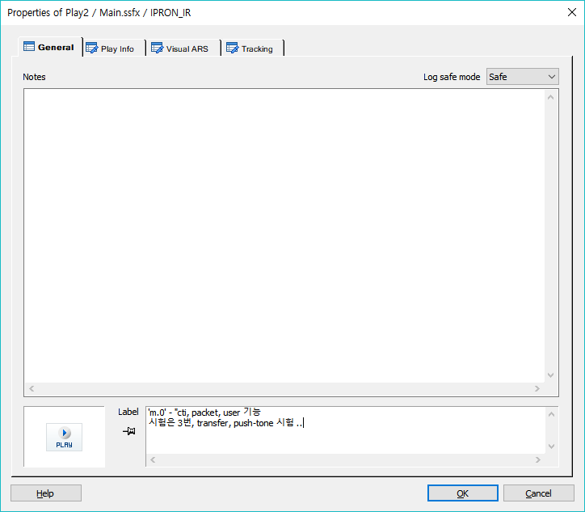
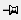
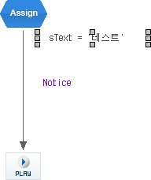

모든 아이템 속성창의 첫 번째 General탭의 항목으로 Note(사용자 입력 사항), Label(사용자 입력 또는 자동입력) 이 있습니다.
PROPERTIES
 General
General

Notes : 사용자가 기록하고자 하는 내용을 기록하고 참고하는 항목입니다.
Label : 시나리오 편집 화면에 출력되는 내용으로 사용자가 편집하거나, 자동으로 라벨의 내용이 출력됩니다.
라벨이 고정이 아니면 OK버튼을 누를 때 마다 아이템의 지정된 속성의 내용이 라벨로 출력되며,
라벨의 내용이 고정이면 OK버튼을 눌러도 라벨이 바뀌지 않으며, Label 에디트 박스에서 수정한 내용은 수정되어 출력됩니다.
Log safe mode : 해당 커맨드 아이템이 동작할 때 발생하는 로그(SLEE) 중에서 정해진 속성의 로그를 암호화 하거나 마스킹 합니다.
safe(로그 암호화), mask(로그 마스킹)

라벨 비고정, 라벨 고정
라벨의 이동
· 라벨이 생성되면 기본 위치는 아이템의 아래가 되는데(Link는 Link 가운데), Shift키를 누르면 라벨부분만 선택이 되고 마우스 왼버튼을 누르고 라벨을 드래그 하면 라벨의 위치를 이동할 수 있습니다.
아이템을 중심으로 360도 이동 가능 하지만 아이템으로 부터 일정 간격 이상 떨어질 수는 없습니다.

· 라벨은 리본 메뉴 View > Label > Label Show/Hide 버튼으로 Show/Hide할 수 있습니다.(이 설정은 시스템 설정에 영향을 미치므로 다른 모든 시나리오가 영향을 받습니다.)
라벨을 Hide한 후 다시 Show를 하면 이전에 이동시킨 라벨의 위치가 다시 기본위치(아이템의 아래쪽)로 초기화 됩니다.(Link의 라벨은 항상표시)